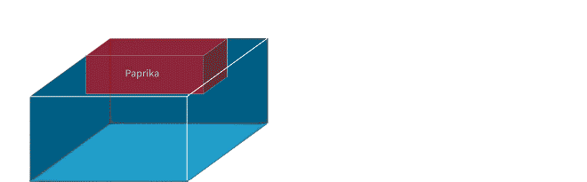

Miscellaneous examples
Below are an assorted selection of pieces of work that showcase a versatility
in my abilities.
Cubing animation
This animation was created to simply explain to clients how cubing (an algorithm which determines how products can fit into containers) works.
Software used
Adobe Animate
Adobe Illustrator

SVG Image map
This file was created as an SVG image map, which allows the creation of 'hotspots' that don't move when screens are resized and can be inserted into markdown by pasting the SVG code.
Software used:
Inkscape
docx
Internal user instructions for how to create the image map.
Release note
This is an example of a typical Ocado release note which is sent to retailers via email.
Subject
OSP Release: \[details of what is being released
Summary
Web app affected: ISF with inventory management > ISF Inbound web app Date available: Now
Details
You can now mark purchase orders (PO) as non-conforming to help you keep a record of problems that have occurred during receiving. Once flagged, you can add details about a POs, or a SKUs, problems so that others will understand what's wrong.
Reason for change
This release is part of the delivery of the following OSP roadmap features: \[insert Jira ticket number]
Further information
For updated documentation see: HELP >\[INSERT PATH]
For further information about these changes, please speak to your Ocado contact.